현 시대에서 '온라인으로 구매하는 일'은 이제 일상이 되었습니다. 특히 의류는 그 중에서도 큰 비중을 차지하죠.
그러나 온라인으로 옷을 구매하는 일이 쉽지만은 않습니다. 원하는 이미지가 머릿속에 뚜렷하게 있어도, 무엇을 원하는지 언어로 표현하기란 쉽지 않으니까요.
그럴 때, 내 머릿속의 이미지를 표현해줄 키워드가 있다면 도움이 되지 않을까 하여 본 칼럼을 기획하였습니다.
다른 파트에 앞서, 첫 번째로 다룰 주제는 Collar 입니다.
가장 기본적인 칼라. 칼라의 각이 40~60도 내로 폭이 좁은 편. 레귤러 칼라보다 더 좁은 것은 ‘내로우 칼라 (Narrow Collar)’.
각이 100도이상
칼라의 각이 100도 이상인 칼라. 세미 스프레드 칼라와 와이드 스프레드 칼라로 구분되며, 와이드 스프레드 칼라의 경우 각이 140도 이상으로 크게 벌어져 있습니다.
버튼을 달아 칼라를 고정시켜 주는 디자인의 칼라.
칼라에 탭(Tap)을 달아 타이의 모양을 고정시켜주는 칼라입니다. 칼라의 높이는 일반적인 칼라보다 높은 편입니다.
칼라가 뒤로 크게 젖혀진 형태의 칼라. 일상에서는 보기 힘드나 격식을 갖춘 장소에서 종종 볼 수 있습니다.
오픈칼라의 일종이며, 파자마의 상의에서 볼 수 있는 칼라입니다.
위로 곧게 서 있으며 접어 넘기지 않은 칼라. 차이니즈 칼라 등이 이에 포함된다.
윙 팁 칼라란 새날개와 비슷하여 명명된 칼라의 디자인을 말한다. 커터웨이 칼라와 마찬가지로 클래식한 분위기에 어울린다.
가톨릭 사제의 옷에 사용되는 폭이 좁고 딱딱하며 위로 곧게 세운 칼라.
끝이 둥글고 일정한 너비의 플랫 칼라. 제임스 배리(James Matthew Barrie, 1860~1937)의 소설 주인공 피터 팬이, 이 칼라의 옷을 착용했기 때문에 위와 같은 이름이 붙었다고 한다.
세일러 칼라. 해군들 혹은 선원들이 입는 제복의 칼라이다. 앞은 ‘V’ 자 모양으로 파이고 뒤로 갈수록 점점 넓어져, 등에는 큰 사각형의 천이 달려 있다. 대체적으로, 깃의 가장자리에는 띠 장식이 있다.
케이프 칼라의 일종이며 넓은 레이스나 주름이 장식된 여성복 깃.
일러스트 ⓒ강혜린
그러나 온라인으로 옷을 구매하는 일이 쉽지만은 않습니다. 원하는 이미지가 머릿속에 뚜렷하게 있어도, 무엇을 원하는지 언어로 표현하기란 쉽지 않으니까요.
그럴 때, 내 머릿속의 이미지를 표현해줄 키워드가 있다면 도움이 되지 않을까 하여 본 칼럼을 기획하였습니다.
다른 파트에 앞서, 첫 번째로 다룰 주제는 Collar 입니다.
Collar
*카라 - 칼라의 일본식 표기
‘칼라’, ‘카라*’ 또는 ‘깃’
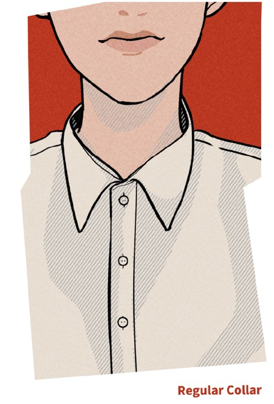
레귤러 칼라 (Regular Collar)
가장 기본적인 칼라. 칼라의 각이 40~60도 내로 폭이 좁은 편. 레귤러 칼라보다 더 좁은 것은 ‘내로우 칼라 (Narrow Collar)’.
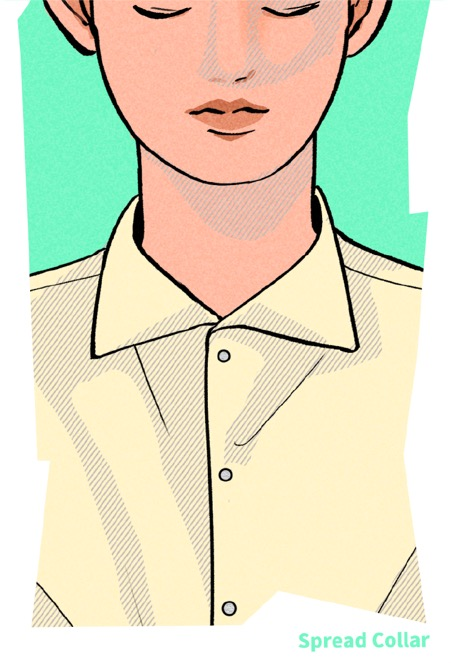
스프레드 칼라 (Spread Collar)
각이 100도이상
칼라의 각이 100도 이상인 칼라. 세미 스프레드 칼라와 와이드 스프레드 칼라로 구분되며, 와이드 스프레드 칼라의 경우 각이 140도 이상으로 크게 벌어져 있습니다.
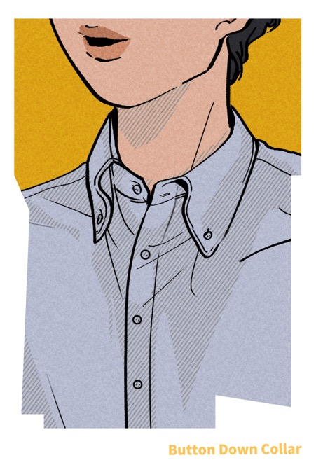
버튼 다운 칼라 (Button Down Collar)
버튼을 달아 칼라를 고정시켜 주는 디자인의 칼라.
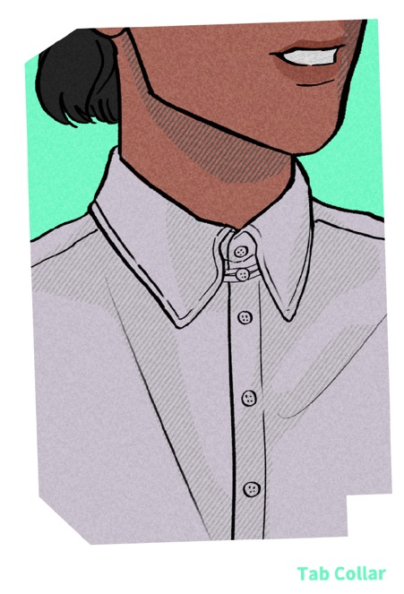
탭 칼라 (Tap Collar)
칼라에 탭(Tap)을 달아 타이의 모양을 고정시켜주는 칼라입니다. 칼라의 높이는 일반적인 칼라보다 높은 편입니다.
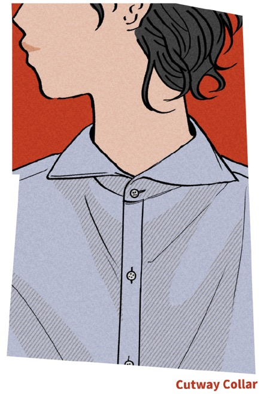
커터웨이 칼라 (Cutaway Collar)
칼라가 뒤로 크게 젖혀진 형태의 칼라. 일상에서는 보기 힘드나 격식을 갖춘 장소에서 종종 볼 수 있습니다.
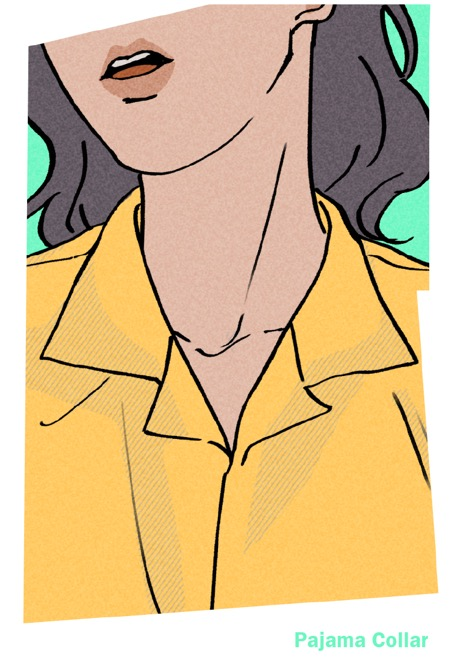
파자마 칼라 (pajama collar)
오픈칼라의 일종이며, 파자마의 상의에서 볼 수 있는 칼라입니다.
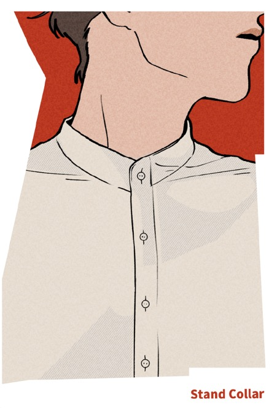
스탠드 칼라 (stand collar)
위로 곧게 서 있으며 접어 넘기지 않은 칼라. 차이니즈 칼라 등이 이에 포함된다.
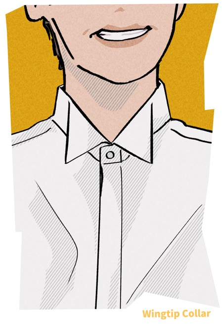
윙 팁 칼라
윙 팁 칼라란 새날개와 비슷하여 명명된 칼라의 디자인을 말한다. 커터웨이 칼라와 마찬가지로 클래식한 분위기에 어울린다.
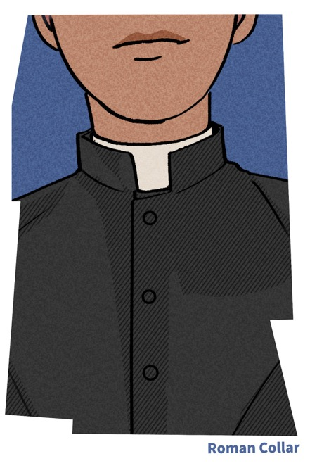
로만 칼라 (roman collar)
가톨릭 사제의 옷에 사용되는 폭이 좁고 딱딱하며 위로 곧게 세운 칼라.
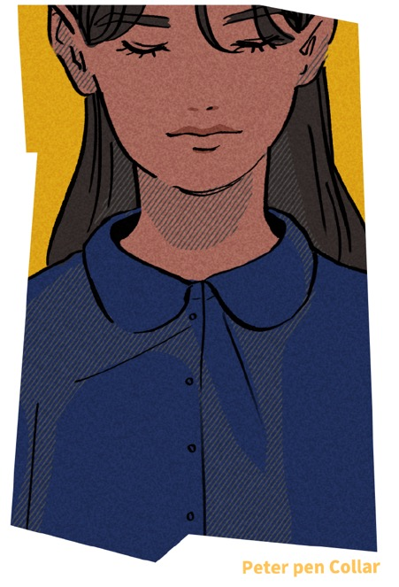
피터 팬 칼라 (peter pen collar)
끝이 둥글고 일정한 너비의 플랫 칼라. 제임스 배리(James Matthew Barrie, 1860~1937)의 소설 주인공 피터 팬이, 이 칼라의 옷을 착용했기 때문에 위와 같은 이름이 붙었다고 한다.
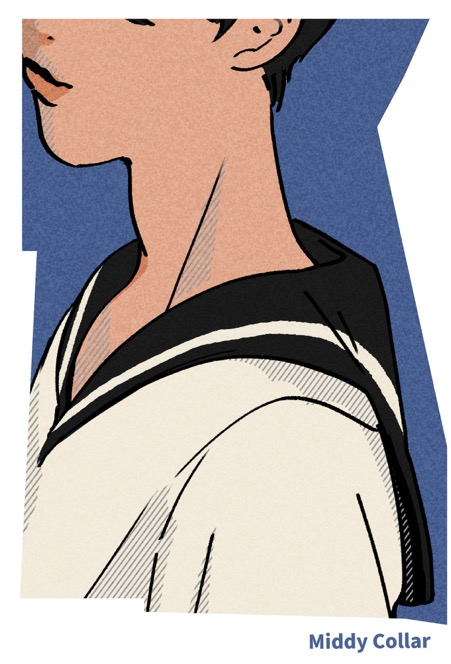
미디 칼라 (middy collar)
세일러 칼라. 해군들 혹은 선원들이 입는 제복의 칼라이다. 앞은 ‘V’ 자 모양으로 파이고 뒤로 갈수록 점점 넓어져, 등에는 큰 사각형의 천이 달려 있다. 대체적으로, 깃의 가장자리에는 띠 장식이 있다.
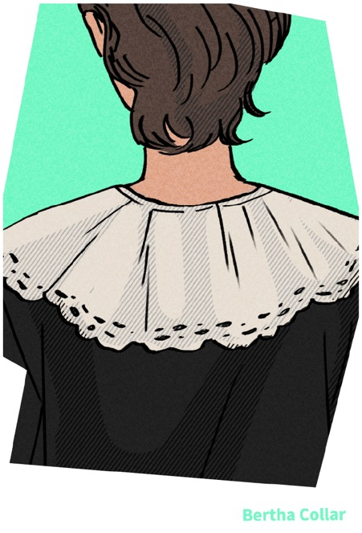
버서 칼라 (bertha collar)
케이프 칼라의 일종이며 넓은 레이스나 주름이 장식된 여성복 깃.
일러스트 ⓒ강혜린